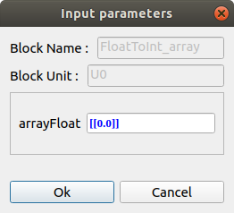
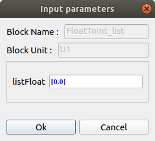
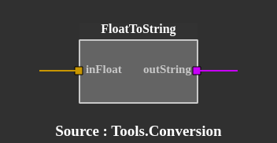
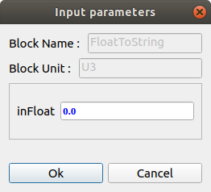
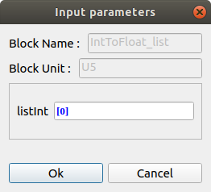
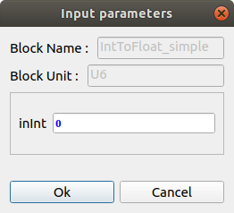

Tools.Conversion
Requirements :
Numpy - pip3 install numpyFloatToInt_array :
Allows the conversion of a floating array into an integer array.
example : [[0.1],[1.1],[2.2] -> [[0],[1],[2]]
 |
arrayFloat : floating array outArrayInt : integer array |
 |
FloatToInt_list :
Allows the conversion of a floating list into an integer list.
example : [0.1, 1.1, 2.2] -> [0, 1, 2]
 |
listFloat : floating list outListInt : integer list |
 |
FloatToInt_simple :
Allows the conversion of a floating number into an integer.
example : 1.1 -> 1
 |
listFloat : floating number outListInt : integer number |
 |
FloatToString :
Allows the conversion of a floating number into string.
example : 1.1 -> '1.1'
|  | inFloat : floating number outString : string of floating number |
 |
IntToFloat_array :
Allows the conversion of an integer array into a floating array.
example : [[0],[1],[2]] -> [[0.0],[1.0],[2.0]]
 |
arrayInt : integer array outArrayFloat : floating array |
 |
IntToFloat_list :
Allows the conversion of an integer list into a floating list.
example : [0, 1, 2] -> [0.0, 1.0, 2.0]
 |
listInt : integer list outListFloat : floating list |
 |
IntToFloat_simple :
Allows the conversion of an integer number into a floating number.
example : 1 -> 1.0
 |
inInt : integer number outArrayFloat : floating number |
 |
IntToString :
Allows the conversion of an integer list into string.
example : 1 -> '1'
 |
inInt : integer number outString : string of integer number |
 |